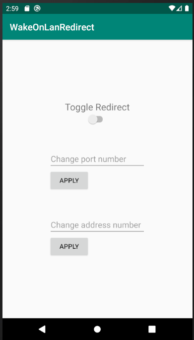

Even though this was one of my earlier and less complex projects, I can still think back on it and feel accomplished. This really was my first real project. I had a problem that I couldn't find the solution to, so I created the solution, and learned so much in the process. To provide a brief explanation, I simply wanted to turn my pc on remotely, but my modem would keep forgetting my pc when it was off, so I used an spare android phone to wait for the WakeOnLan signal and broadcast it.
